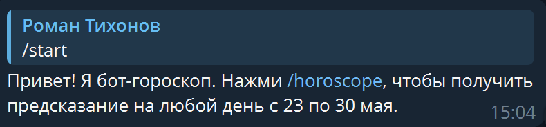
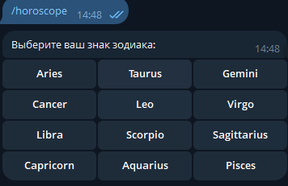
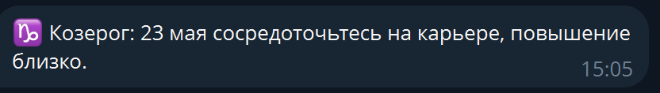

Бот позволяет получить ежедневный гороскоп для любого знака зодиака. Пользователь выбирает знак. Бот интегрирован с бесплатным API и написан на Python с использованием библиотеки pyTelegramBotAPI.
/start — приветствие/horoscope — начать выбор/help — справкаInline-клавиатуры для выбора знака. Никакого ручного ввода.
Horoscope App API — возвращает текстовое предсказание и дату.

Команда /horoscope и появление кнопок знаков.

Кнопки выбора знака задиака.

Полученный гороскоп с текстом и датой.
Все исходные коды, документация и руководства находятся в репозитории:
Ссылка на GitHub